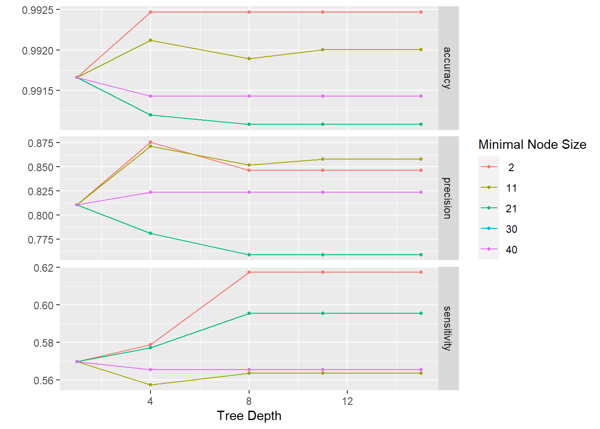
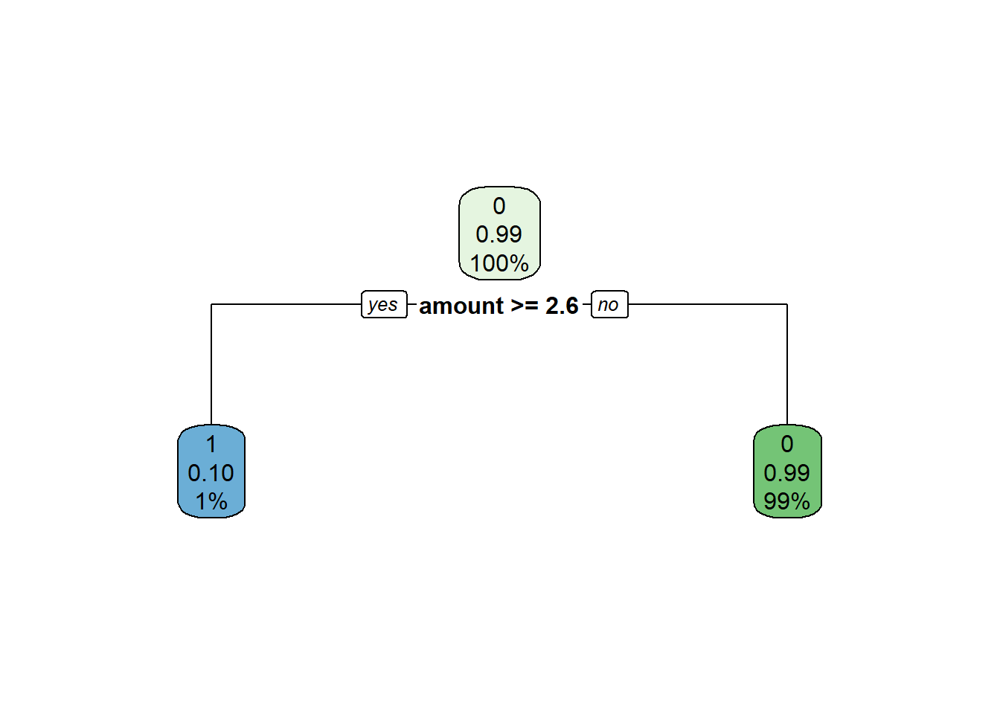

Código
# Carga de paquetes necesarios
knitr::opts_chunk$set(echo = TRUE)
knitr::opts_chunk$set(message = FALSE)
knitr::opts_chunk$set(warning = FALSE)
library(tidyverse)
library(discrim)
library(tidymodels)
library(workflows)Trabajo Práctico n°3
Carga de las librerias necesarias
# Carga de paquetes necesarios
knitr::opts_chunk$set(echo = TRUE)
knitr::opts_chunk$set(message = FALSE)
knitr::opts_chunk$set(warning = FALSE)
library(tidyverse)
library(discrim)
library(tidymodels)
library(workflows)data <- read_csv('data/df_fraude.csv')
glimpse(data)Rows: 17,839
Columns: 10
$ step <dbl> 0, 0, 0, 0, 0, 0, 0, 0, 0, 0, 0, 0, 0, 0, 0, 0, 0, 0, 0, 0~
$ customer <chr> "'C60351691'", "'C1038996959'", "'C574062699'", "'C8308634~
$ age <chr> "'2'", "'2'", "'2'", "'6'", "'2'", "'4'", "'3'", "'4'", "'~
$ gender <chr> "'F'", "'M'", "'M'", "'M'", "'F'", "'M'", "'M'", "'F'", "'~
$ zipcodeOri <chr> "'28007'", "'28007'", "'28007'", "'28007'", "'28007'", "'2~
$ merchant <chr> "'M1823072687'", "'M348934600'", "'M348934600'", "'M182307~
$ zipMerchant <chr> "'28007'", "'28007'", "'28007'", "'28007'", "'28007'", "'2~
$ category <chr> "'es_transportation'", "'es_transportation'", "'es_transpo~
$ amount <dbl> 36.88, 31.32, 43.75, 14.20, 2.63, 50.90, 15.69, 14.36, 0.1~
$ fraud <dbl> 0, 0, 0, 0, 0, 0, 0, 0, 0, 0, 0, 0, 0, 0, 0, 0, 0, 0, 0, 0~Step: representa el día en que la transacción sucede. En total son 180 steps, por lo que la base de datos es por 6 meses.
Customer: representa el ID de la persona que inicia la transacción. Está formada con la letra C seguida por una secuencia unica de 10 numeros.
Age: esta variable se divide en intervalos de edad, comenzando de 0 a 6 y la letra U que significa Unknown. La edad es Unknow solo para las transacciones que tienen el mismo género que Enterprise. La codificación de los números es:
Gender: esta variable se codifica como F para Mujer, M para Hombre, E para Empresa y U para Unknown.
Merchant: esta variable representa la identificación única de la parte que recibe la transacción. Similar a la identificación del cliente, la secuencia está formada por la letra M, seguida de una serie de 9 números. Hay un total de 50 comerciantes únicos en el conjunto de datos.
Category: hay 15 categorías únicas que etiquetan el tipo general de transacción: transporte, comida, salud, bienestar y belleza, moda, bares y restaurantes, hiper, deportes y juguetes, tecnología, hogar, servicios de hotel, otros servicios, contenidos, viajes, ocio.
Amount: representa el valor de la transacción. Solo hay 52 valores iguales a 0 y ningún valor negativo.
Fraud: una columna indicadora codificada con 0 si la transacción fue limpia y con 1 si la transacción fue fraudulenta.
zipcodeOri y zipMerchant: contienen un valor constante de 28007, que es un código postal en Ansonville, Carolina del Norte, Estados Unidos.
df <- data |>
select ("gender", "amount", "fraud", "category", "age")|>
filter(age!="'U'" & category != c("'es_transportation'", "'es_food'", "'es_health'"))df$fraud <- as.factor(df$fraud)
df$age <- as.factor(df$age)
df$gender <- as.factor(df$gender)
df$category <- as.factor(df$category)
glimpse (df)Rows: 12,331
Columns: 5
$ gender <fct> 'M', 'M', 'F', 'M', 'F', 'F', 'F', 'F', 'F', 'M', 'F', 'M', '~
$ amount <dbl> 31.32, 43.75, 2.63, 50.90, 14.36, 0.10, 44.31, 9.17, 54.83, 9~
$ fraud <fct> 0, 0, 0, 0, 0, 0, 0, 0, 0, 0, 0, 0, 0, 0, 0, 0, 0, 0, 0, 0, 0~
$ category <fct> 'es_transportation', 'es_transportation', 'es_transportation'~
$ age <fct> '2', '2', '2', '4', '4', '3', '2', '3', '3', '5', '4', '2', '~Para una correcta interpretación de nuestros resultados vamos a especificar que 1 es nuestra clase positiva (cliente quiere contratar un seguro)
df$fraud <- relevel(df$fraud, ref = "1")
levels(df$fraud)[1] "1" "0"
set.seed(456)#setear la semilla
# Create data split for train and test
df_split <- initial_split(df,
prop = 0.7,
strata = fraud)# para conservar la proporción de clases
# Create training data
df_train <- df_split %>%
training()
# Create testing data
df_test <- df_split %>%
testing()
# Number of rows in train and test dataset
paste0("Total del dataset de entrenamiento: ", nrow(df_train))[1] "Total del dataset de entrenamiento: 8631"paste0("Total del dataset de testeo: ", nrow(df_test))[1] "Total del dataset de testeo: 3700"TidymodelsSi no tenés instalado
tidymodelspodés hacerlo corriendo el siguiente código
install.packages("tidymodels")Al igual que tidyverse, tidymodels está compuesto por un conjunto de paquetes como los siguientes:
rsample: para realizar la división del dataset en entrenamiento, validación y testeo.
recipes: para el preprocesamiento
parnship: para especificar el modelo
yardstick: para evaluar el modelo
Mayores especificaciones y ejemplos de uso de tidymodels, en su página
reciperecipe_df <- recipe (fraud ~ ., data= df_train) |>
step_scale(all_numeric_predictors(), -all_outcomes()) |>
step_dummy(all_nominal_predictors()) |>
prep()
# Bake
df_train <- bake(recipe_df, new_data=df_train)
df_test <- bake(recipe_df, new_data=df_test)Se puede entrenar cualquier modelo (que este incluído en tidymodels) siguiendo los pasos que se muestran a continuación.
1- Especificar el modelo (eg. Regresión logística, Random Forest, SVM, etc)
2- Con set_engine() se especifíca la familia de modelos
3- Con set_mode() se especifica el tipo de modelo a entrenarse (regresión o clasificación)
4- Usar la función fit () para entrenar el modelo y, dentro de eso, debe proporcionar la notación de la fórmula y el conjunto de datos
##Con los hiperparámetros por default
#Naive Bayes
set.seed(234)
model_NB <- naive_Bayes(smoothness = .8) |>
set_mode("classification") |>
set_engine("naivebayes")
#SVM
set.seed(234)
model_SVM <-
svm_rbf() |>
set_mode("classification") |>
set_engine("kernlab")
#Arboles de decisión
set.seed(234)
model_TREE <- decision_tree() |>
set_engine("rpart") |>
set_mode("classification")
#Random Forest
set.seed(234)
model_RF <- rand_forest() |>
set_engine("ranger") |>
set_mode("classification") |>
set_args(trees = 100)Con tune, se especifica qué hiperparámetros van a ser tuneados.
#Arboles de decisión con validacion cruzada
set.seed(234)
model_TREE <- decision_tree(tree_depth = tune(), min_n = tune()) |>
set_engine("rpart") |>
set_mode("classification")wf_TREE <- workflow() |>
add_recipe(recipe_df) |>
add_model(model_TREE)
wf_TREE== Workflow ====================================================================
Preprocessor: Recipe
Model: decision_tree()
-- Preprocessor ----------------------------------------------------------------
2 Recipe Steps
* step_scale()
* step_dummy()
-- Model -----------------------------------------------------------------------
Decision Tree Model Specification (classification)
Main Arguments:
tree_depth = tune()
min_n = tune()
Computational engine: rpart 
set.seed(1234)
fold_df <- vfold_cv(df_train, v=5)
fold_df$splits[[1]]
<Analysis/Assess/Total>
<6904/1727/8631>
[[2]]
<Analysis/Assess/Total>
<6905/1726/8631>
[[3]]
<Analysis/Assess/Total>
<6905/1726/8631>
[[4]]
<Analysis/Assess/Total>
<6905/1726/8631>
[[5]]
<Analysis/Assess/Total>
<6905/1726/8631>Necesitamos un conjunto de posibles valores de parámetros para probar el árbol de decisión.
param_grid <- grid_regular(tree_depth(), min_n(), levels = 5)
param_grid# A tibble: 25 x 2
tree_depth min_n
<int> <int>
1 1 2
2 4 2
3 8 2
4 11 2
5 15 2
6 1 11
7 4 11
8 8 11
9 11 11
10 15 11
# ... with 15 more rowsdoParallel::registerDoParallel() #paralelizamos los cálculos
tune_DF <- tune_grid(
model_TREE,
fraud~ .,
resamples = fold_df,
grid = param_grid,
metrics = metric_set(accuracy, sensitivity, precision)
)Las métricas provienen del rendimiento de la validación cruzada a través de los diferentes valores de los parámetros.
collect_metrics(tune_DF)# A tibble: 75 x 8
tree_depth min_n .metric .estimator mean n std_err .config
<int> <int> <chr> <chr> <dbl> <int> <dbl> <chr>
1 1 2 accuracy binary 0.992 5 0.000944 Preprocessor1_M~
2 1 2 precision binary 0.811 5 0.0328 Preprocessor1_M~
3 1 2 sensitivity binary 0.570 5 0.0283 Preprocessor1_M~
4 4 2 accuracy binary 0.992 5 0.00102 Preprocessor1_M~
5 4 2 precision binary 0.875 5 0.0377 Preprocessor1_M~
6 4 2 sensitivity binary 0.579 5 0.0277 Preprocessor1_M~
7 8 2 accuracy binary 0.992 5 0.00111 Preprocessor1_M~
8 8 2 precision binary 0.846 5 0.0418 Preprocessor1_M~
9 8 2 sensitivity binary 0.617 5 0.0351 Preprocessor1_M~
10 11 2 accuracy binary 0.992 5 0.00111 Preprocessor1_M~
# ... with 65 more rowsautoplot(tune_DF)
param_final <- tune_DF |>
select_best(metric = "precision")
param_final# A tibble: 1 x 3
tree_depth min_n .config
<int> <int> <chr>
1 4 2 Preprocessor1_Model02wf_TREE <- wf_TREE |>
finalize_workflow(param_final)
wf_TREE== Workflow ====================================================================
Preprocessor: Recipe
Model: decision_tree()
-- Preprocessor ----------------------------------------------------------------
2 Recipe Steps
* step_scale()
* step_dummy()
-- Model -----------------------------------------------------------------------
Decision Tree Model Specification (classification)
Main Arguments:
tree_depth = 4
min_n = 2
Computational engine: rpart A continuación, se ajusta el flujo de trabajo del modelo final a los datos de entrenamiento y se evalúa el rendimiento en los datos de testeo.
La función ´last_fit()´ ajuta el flujo de trabajo a los datos de entrenamiento y generará predicciones sobre los datos de prueba según lo define nuestro objeto churn_split.
dt_fit <- wf_TREE |>
# fit on the training set and evaluate on test set
last_fit(df_split, metrics = metric_set(precision))
dt_fit# Resampling results
# Manual resampling
# A tibble: 1 x 6
splits id .metrics .notes .predictions .workflow
<list> <chr> <list> <list> <list> <list>
1 <split [8631/3700]> train/test split <tibble> <tibble> <tibble> <workflow>test_performance <- dt_fit |> collect_metrics()
test_performance# A tibble: 1 x 4
.metric .estimator .estimate .config
<chr> <chr> <dbl> <chr>
1 precision binary 0.892 Preprocessor1_Model1collect_predictions(dt_fit) |>
conf_mat(fraud, .pred_class) Truth
Prediction 1 0
1 33 4
0 21 3642final_tree <- extract_workflow(dt_fit)
final_tree== Workflow [trained] ==========================================================
Preprocessor: Recipe
Model: decision_tree()
-- Preprocessor ----------------------------------------------------------------
2 Recipe Steps
* step_scale()
* step_dummy()
-- Model -----------------------------------------------------------------------
n= 8631
node), split, n, loss, yval, (yprob)
* denotes terminal node
1) root 8631 128 0 (0.014830263 0.985169737)
2) amount>=2.603934 81 8 1 (0.901234568 0.098765432) *
3) amount< 2.603934 8550 55 0 (0.006432749 0.993567251) *library(rpart.plot)
final_tree %>%
extract_fit_engine() %>%
rpart.plot(roundint = FALSE)